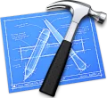
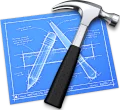

Mes projets (jeux vidéo)
(Retrouvez mes autres projets sur
GitHub
et
GitLab)
Moonstone Kingdom
Moonstone Kingdom est un jeu RPG de type aventure et exploration jouable sur PC. Inscrit dans une dynamique de quêtes principales et secondaires, le joueur devra évoluer en même temps que son
avancement pour venir à bout des donjons et ainsi récupérer les « Moonstones » pour ramener la paix dans son village.
(Unity, C#, Git, Trello et Visual Studio)
Cadre :
Réalisation d’un projet dans le cadre du cours « Laboratoire de jeux vidéo » en
hiver 2021.
Tâches :
- Implémentation d'un module dans Unity pour créer et éditer des dialogues.
- Interface des dialogues.
- Implémentation des actions et évènements liés quêtes.
- Interface du suivi des quêtes.
- Développement d'un objet pour l'ajout rapide de nouveaux sorts.
- Animation des sorts.
- Mécanique d'attaque au corps-à-corps et avec les sorts.
- Mise en place d'un système de patrouille et recherche sur les ennemis.
- Animation des barres de vie et des dégâts et soins flottants.
- Gestion des loots sur les ennemis.
- Visualisation des personnages à travers les obstacles.
Participants :
Alan Guivarch, Martin Skowron, Antoine Philippe, Alexandre Cassanelli, Corentin Jean, Airy Goyon et Level sony dilane MBANGO.
Crush The King
Coincé dans son château, le Roi va devoir tenter de s'échapper en esquivant et escaladant les morceaux de château qu'un
Magicien lui envoie ! Mais prenez garde, les blocs pourraient vous réserver des surprises ! (Toute ressemblance avec un
jeu déjà existant serait purement fortuite).
(Unity, C#, Git, Trello et Visual Studio)
Cadre :
- Participation à la WonderJam édition hiver 2021 (48h) avec
le thème « résistance ».
- Choix entre les styles « platformer » et « arcade
».
Tâches :
- Logique du jeu "Tetris".
- Physique des blocs.
- Système de sauvegarde des scores.
- Tirage des effets des blocs et animation d'une roue casino.
Participants :
Mayeul Marsaut, Thimotée Durgeaud, Oscar Trosseau, Pierre Courtel--Sourdeau, Sylvain Franco et Level sony dilane MBANGO.
Brink of Light
Brink of Light est un jeu de type Roguelike jouable sur PC. Dans ce jeu, le joueur incarne un feu
follet partant à
l’aventure dans un donjon pour sauver son peuple de l'extinction après qu’une force démoniaque ait
enlevé une grande
partie de la population.
(Unity, C#, Git, Trello et Visual Studio)
Cadre :
Réalisation d’un projet dans le cadre du cours « Principes de conception et de développement de jeux
vidéo » en
automne 2020.
Tâches :
- Responsable de l’implémentation de l’UI.
- Statistiques des personnages.
- Gestion de l’économie en jeu.
- Animation des barres de vie et des dégâts et soins
flottants.
- Gestion de l’inventaire.
- Échanges avec les personnages marchands.
- Transition entre les salles et les scènes.
- Paramètres audio et graphiques.
- Gestion des menus.
- Drops des personnages.
- Cinématiques.
- Participation à l’implémentation de certains mécanismes de
base.
- Gestion des niveaux de difficulté.
Participants :
Nathan Chevenard, Aymeric Damour, Florian Zeni et Level sony dilane MBANGO.
BreuMage
Deux magiciens ayant l'habitude de s'entraider pour concocter leurs potions se retrouvent
soudainement l'un contre
l'autre après que leur boule de cristal se soit détraquée !
Attrapez votre manette afin de collecter tous les ingrédients nécessaires à votre potion et ainsi
prouver que vous êtes
le meilleur magicien ! Mais faites attention à ce que votre feu ne s'éteigne pas ou il pourrait vous
arriver malheur !
(Unity, C#, Git, Trello et Visual Studio)
Cadre :
- Participation à la WonderJam édition automne 2020 (48h) avec
le thème « quand la magie tourne mal ».
- Choix entre les styles « exploration » et « multijoueur
».
Tâches :
- Coupage du bois.
- Ramassage des ingrédients.
- Remplissage du chaudron.
- Gestion de l’inventaire.
- Alimentation du feu.
- Gestion des niveaux de difficulté.
Participants :
Sylvain Franco, Antonin Gaboriau, Pierre Lepercq, Mayeul Marsaut, Sophie Raudrant et Guillaume Blanc
de Lanaute.
Rocket Launcher
À l'aide de sa dextérité, le joueur devra propulser sa fusée à travers les différents niveaux pour
en venir à bout en
faisant attention de ne pas rentrer en collision avec les murs.
(Unity, C#, Git, Trello et Visual
Studio)
Cadre :
Projet personnel réalisé en automne 2020 pour prendre le moteur de jeu Unity en main.
Tâches :
L'intégralité du contenu sauf les particules qui apparaissent quand la fusée accélère, quand la
fusée rentre en collision ou quand c'est la fin d'un niveau.
Participant :
Level sony dilane MBANGO.
Raven
Adapter l'intelligence artificielle du projet Raven tiré du livre de Mat Buckland afin de
l'améliorer. Il s'agit ici d'une
simulation d'agents qui cherchent à s'entretuer en équipe ou individuellement.
(C++, Git, Trello et Visual Studio)
Cadre :
Réalisation d’un projet dans le cadre du cours « Intelligence artificielle pour le jeu vidéo » en
automne 2020.
Tâches :
- Ajout du mode équipe.
- Apprentissage d'un bot en observant le joueur humain (réseau
de neurones).
- Participation à l’implémentation d'un nouveau but (se
cacher).
Participants :
Guilhem Cerba, De Almeida Antonin, Alexandre Duplay, Téo Martin, Quentin Yahia et Guillaume Blanc de
Lanaute.
Diabollik
Inspiré du jeu de société
Diaballik, Diabollik est un jeu de plateau où le joueur devra parcourir le
plateau et arriver avec le ballon dans le camp
adverse. Le joueur pourra affronter un ami avec le mode 2 joueurs ou alors affronter une
intelligence artificielle
avec différents niveaux de difficultés (algorithme minimax).
(
Bibliothèque graphique maison,
C,
Git,
Trello et
Visual
Studio Code)
Cadre :
Réalisation d’un projet dans le cadre du cours « Algorithmique » en
automne 2018.
Tâches :
- Animations des personnages.
- Intelligence artificielle des personnages.
- Déplacement des personnages sur le plateau.
- Participation à l'aide pour la sélection des
déplacements.
- Gestion des menus.
- Participation à l'implémentation des mécaniques globales du
jeu.
Participants :
Allan Duee et Level sony dilane MBANGO.


 
